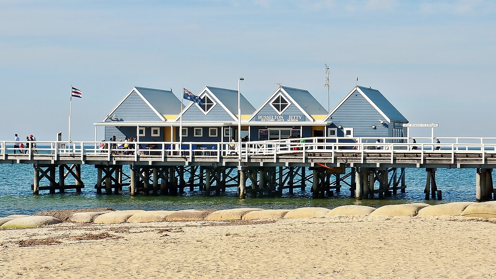

Margaret River and Busselton · 5-day family itinerary
About three hours’ drive south of Perth, then four nights in Margaret River. Built for a six-year-old and a toddler in a front carrier, because the jetty train, the observatory and every cave on this route say no to prams, while the jetty walk and one clifftop path say yes.

Photo: Bahnfrend, Busselton Jetty, 2015 (01), CC BY-SA 4.0, via Wikimedia Commons.
.JPG){kind=link}
Checked before you commit
This illustrative route drives from Perth to Busselton, stays four nights in Margaret River and drives home. Busselton Jetty’s admission, jetty train and Underwater Observatory pages, Capes Foundation pages for Mammoth, Lake, Jewel and Ngilgi caves and both cape lighthouses, its 2026–27 rates sheet, Parks and Wildlife Service pages for Leeuwin-Naturaliste National Park, Boranup Forest Drive, Sugarloaf Rock, Canal Rocks and Hamelin Bay, and Margaret River Region and Tourism Australia travel pages were read on 6 November 2026. Nothing was booked.
One drive in, one drive out, and one base. Busselton is at the northern end of the region, so the jetty train is Day 1 and the jetty walk is the last stop on Day 5. Margaret River sits between the capes: Day 3 goes south to Augusta and Cape Leeuwin, Day 4 north to Cape Naturaliste. Margaret River Region says Busselton to Augusta is a 1.5-hour drive.
One ticketed anchor each morning and an easier afternoon. Moderate day pace fills a morning and an afternoon slot, with lunch and dinner. The real effort is stairs with a toddler in a front carrier: 370 steps at Mammoth Cave, 250 stairs at Jewel Cave and 176 steps up Cape Leeuwin Lighthouse.
We didn’t check accommodation, or jetty, cave or lighthouse availability, and the Busselton Jetty pages we read didn’t show train or observatory prices. Leeuwin-Naturaliste National Park is free to enter. A booking-hub link is intent only. It doesn’t hold a room, a train seat or a tour.
Planning boundary: dates are illustrative; the worked example runs Monday 16 to Friday 20 November 2026. Busselton Jetty says bookings are essential, prams and strollers can’t go on the jetty train or into the Underwater Observatory, and children under 3 need an infant ticket and ride on an adult’s lap.
The Parks and Wildlife Service park alerts page didn’t show any alerts when we fetched it, so we can’t say whether anything on this route is closed; check it before each day. Its park pages say H5 bird flu has been detected in WA. Alfred doesn’t check closures, tides or tour times. Book opens a partner checkout; it doesn’t prove a booking.
Route and family-coordination brief
Party: two adults, one six-year-old and one 18-month-old, living in Perth. Base: four nights in Margaret River. Pace: moderate, a morning and an afternoon slot a day. Budget input: Mid Range. Gear: a front-worn baby carrier and a pram.
Getting there: Margaret River Region calls it an easy three-hour drive from Perth, or three to four hours depending on route, before stops. It names the Forrest Highway as the most direct route, with the Wilman Wadandi Highway bypassing Bunbury. Tourism Australia says public transport in Margaret River is limited and recommends hiring a vehicle.
Carrier rule: Busselton Jetty says prams, strollers and pushers, including compact folding types, can’t go on the jetty train or into the Underwater Observatory, and recommends a baby carrier. For a A$10 deposit you can lock the pram to the jetty. Capes Foundation says front-worn baby carriers are fine in its caves, backpack baby carriers are not permitted, and backpacks should stay in the car.
Pram rule: Busselton Jetty says prams are welcome on the jetty walk itself. Parks and Wildlife says the 3.4 km sealed path from Sugarloaf Rock to Cape Naturaliste is assisted wheelchair and pram accessible. Capes Foundation lists pram access at both lighthouses for the grounds and museum only, not inside the tower.
Park rule: Leeuwin-Naturaliste National Park is free to enter. Parks and Wildlife says no dogs or other pets, always supervise children, take extreme care near cliff edges and heed hazard signs. It lays 1080 baits around Boranup Forest. Report sick or dead birds or wildlife on 1800 675 888.
Left out: Lake Cave and Ngilgi Cave (kept as swaps), Hamelin Bay’s stingrays (Parks and Wildlife says they are mostly seen in summer and have a venomous barb), wineries, surf breaks, 4WD-only beaches, and the Cape to Cape Track beyond the sealed section.
Day 1 — Drive south, Busselton Jetty train and Underwater Observatory
Leave Perth early with the front carrier packed where you can reach it. Margaret River Region gives about three to four hours from Perth to the region, depending on route and before stops, and says Busselton is at its northern end. Book the Underwater Observatory Tour before you leave: Busselton Jetty says bookings are essential.
Busselton Jetty says observatory tours leave on the hour from the Interpretive Centre, the blue buildings at the base of the jetty, and take about 1 hour 45 minutes: the train out about 1.7 km, 45 minutes in the observatory, half of it guided, and the train back. Arrive 15 minutes early to collect tickets. Each tour takes 44 people.
The observatory goes 8 m down to the sea floor; Busselton Jetty lists six flights of ten stairs, with a lift. Prams can’t go on the train or into the observatory, so the toddler rides in the front carrier and, on the train, on an adult’s lap with an infant ticket. Lock the pram to the jetty for a A$10 deposit, or leave it in the car. Then drive on to Margaret River and check in.
Fallback: if traffic makes you miss your tour, walk the jetty with the pram instead and ask about a later departure; the walk is also on Day 5.
Live-check: your tour booking and time; Busselton Jetty’s note that seasonal and specialty tours can change the rate; your accommodation booking.
Day 2 — Mammoth Cave and Boranup Forest
Drive to Mammoth Cave on Caves Road at Forest Grove. Capes Foundation lists it as self-guided with an audio guide, open 9 am to 5 pm with last entry at 4 pm; allow about an hour. It has 370 steps on a boardwalk with rest platforms, a 50,000-year-old zygomaturus jawbone still in the cave wall, and a forest trail at the exit. Prams aren’t permitted inside; front-worn carriers only.
Picnic, then drive Boranup Drive. Parks and Wildlife says it suits two-wheel-drive vehicles and winds through the karri forest past Boranup Lookout, which looks west to Hamelin Bay and has toilets and picnic tables. It calls the forest particularly picturesque in late-afternoon light. Meat baits containing 1080 are laid in the area, so keep children away from anything on the ground.
Fallback: if the toddler is done after the cave, skip the drive and go back to Margaret River for a rest. If the six-year-old wants a guided cave instead, Lake Cave is also at Forest Grove: a one-hour guided tour with 325 stairs, bookings essential.
Live-check: the Parks and Wildlife park alerts page; at checkout, whether the toddler needs a free ticket.
Day 3 — Augusta: Jewel Cave and Cape Leeuwin Lighthouse
Drive south to Jewel Cave, on Jewel Caves Road at Deepdene near Augusta. Capes Foundation calls it the largest cave open to visitors in Western Australia. Tours are guided, one hour, with 250 stairs, bookings essential, last entry 4 pm. No prams; front-worn carriers only. Deepdene Cafe is on site for after the tour.
Cape Leeuwin Lighthouse, on Leeuwin Road, is the tallest lighthouse on mainland Australia, Capes Foundation says, open 8.45 am to 5 pm with last entry at 4.30 pm. Guided tower tours take about 30 minutes and climb 176 steps, and children must be at least 4 to climb. One adult takes the six-year-old up; the other takes the toddler round the grounds and Lightkeepers’ Museum, where prams are fine. Under 4s visit the grounds free.
Fallback: if the wind or rain is too much on the cape, do the museum only. Margaret River Region suggests Boranup Drive as a detour on the way to or from Augusta, if you skipped it on Day 2.
Live-check: Jewel Cave and tower tour bookings; park alerts; the Bureau of Meteorology forecast.
Day 4 — Cape Naturaliste: the pram path and the lighthouse
Drive north to Sugarloaf Rock, 2.7 km along Sugarloaf Road from Cape Naturaliste Road. Parks and Wildlife asks visitors not to try to cross to the rock, a nesting haven for seabirds such as the red-tailed tropicbird. Then take the pram on the 3.4 km sealed path to Cape Naturaliste, which it describes as assisted wheelchair and pram accessible, with boardwalks, lookouts and benches.
It is 3.4 km each way. Turn back when the six-year-old flags, or have one adult walk back for the car.
Cape Naturaliste Lighthouse, 1267 Cape Naturaliste Road. Capes Foundation lists 30-minute guided tours, 9 am to 5 pm with last entry at 4.30 pm, and 59 steps to the tower balcony. It says September to November is one of the best times there to see whales close to shore on their southern migration; a sighting isn’t promised. On the way back, stop at Canal Rocks, where Parks and Wildlife says a wooden bridge crosses part of the canal above the surge.
Fallback: if it is wet, swap the path for Ngilgi Cave at Yallingup: self-guided, 350 steps, allow about 1.5 hours, with a nature play area at the end. Capes Foundation lists A$32 adult and A$16 children 4–16.
Live-check: park alerts; the forecast; Cape Naturaliste tour times.
Day 5 — Busselton Jetty on foot, drive home
Check out and drive north to Busselton. Walk the jetty with the pram: Busselton Jetty says prams, walkers and wheelchairs are welcome, the jetty is 1.841 km, about a 25-minute walk each way, and a Jetty Walk Pass is A$5 for visitors 17 and over while the Interpretive Centre is open, free when it is closed. Move aside when the train comes. The last 150 m is open only during observatory hours.
Lunch in Busselton, then drive home to Perth.
Fallback: if the weather is poor, skip the walk and drive straight home.
Live-check: traffic on the drive north; the Bureau of Meteorology forecast.
Planning notes
Dates are illustrative. At decision time, recheck the Parks and Wildlife Service park alerts, Busselton Jetty tour times and bookings, Capes Foundation cave and lighthouse hours and tickets, and your accommodation booking. A travelling profile is required, and the adults, children and ages Alfred plans for come from the travellers on that profile.
Capes Foundation’s experience pages and its 2026–27 rates sheet disagree by about a dollar. The pages list A$26 adult and A$13 child for one cave, A$23 and A$12 for the Cape Leeuwin tower, and A$18 and A$10 for Cape Naturaliste. The sheet lists A$27 and A$12.50, A$24 and A$11, and A$19 and A$10. The price at checkout is the one that counts.
For the pram and carrier rules in more detail, read The pram can walk the jetty, not ride the train.
On web Lets Go, Holiday takes origin, destination, dates, a budget step and a day pace, then Plan my trip queues the itinerary. Moderate day pace fills a morning and an afternoon slot, with lunch and dinner. The Estimated costs bar, when it appears, is a rounded median of flight-and-hotel packages, so it isn’t a useful number for a family driving from Perth.
While the trip is still Planning, you can keep or change the hotel and then the flights Alfred picked. We did not test whether city search offers Margaret River or Busselton, what Alfred plans for flights on a trip you drive, or whether Alfred’s hotel choices include places in Margaret River.
Once the trip is ACTIVE, you can edit an item’s title, times, location and notes, so “front carrier only; pram locked at the jetty, A$10 deposit” can sit on the card. In Hey Alfred you can ask to swap two full days, and you confirm before it is applied. Book opens a partner checkout. It doesn’t buy a jetty, cave or lighthouse ticket.
Plan a trip
Start with your people, dates and pace, then review the editable plan before booking.
Plan a trip